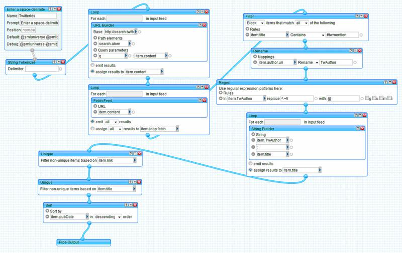
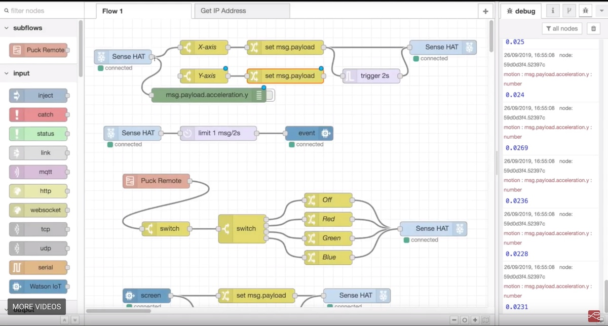

<div align="center" style="padding-top: 2rem;"> <h1>A Hard-Boiled Egg</h1> <p>Data Science, Software Engineering, and a Plausible Path to a Slightly Better Future</p> <p><img src="../img/codebender-logo.svg" alt="Third Bit logo" width="15%" /></p> <h2>Greg Wilson</h2> <p> <a href="http://third-bit.com/talks/sdxjs/">http://third-bit.com/talks/ds4se/</a> </p> <p> <img src="../img/cc-by.svg" width="20%" alt="CC-BY" /> </p> </div> --- "You'd like Freedom, Truth, and Justice, wouldn't you, Comrade Sergeant?" said Reg encouragingly. "I'd like a hard-boiled egg," said Vimes, shaking the match out. There was some nervous laughter, but Reg looked offended. "In the circumstances, Sergeant, I think we should set our sights a little higher—" "Well, yes, we could," said Vimes. "But…well, Reg, tomorrow the sun will come up again, and I'm pretty sure that whatever happens we won't have found Freedom, and there won't be a whole lot of Justice, and I'm damn sure we won't have found Truth. But it's just possible that I might get a hard-boiled egg." — Sir Terry Pratchett, *Night Watch* --- <div class="split-title"><h2>What I'm Building On</h2></div> <div align="center"> <br> <a href="https://veronikach.com/">Veronika Cheplygina</a> </div> - *Weak failure*: I did a lot of work and nothing came of it - *Strong failure*: I did a lot of work and actually did harm - This talk is built on several weak failures --- <div class="split-title"><h2>Back in the Twentieth Century</h2></div> <div align="center"> <img src="../img/ddj.png" alt="Dr Dobb's Journal"> </div> - Book review editor for *[Doctor Dobb's Journal](http://drdobbs.com)* - There were hundreds of textbooks on compilers, but none on debuggers or debugging - Or build tools, or package managers, or… --- <div class="split-title"><h2>Early 2000s</h2></div> - Asked to teach a course on software architecture - Looked at two dozen books and other people's courses… - …but none described actual architectures - This, we can fix <div align="center"> <a href="https://www.amazon.com/Beautiful-Code-Leading-Programmers-Practice/dp/0596510047/"> <img src="../img/beautiful-code.png" alt="Beautiful Code" width="18%"> </a> <a href="http://aosabook.org/en/#vol1"><img src="../img/aosa1.png" alt="AOSA Vol 1" width="18%"></a> <a href="http://aosabook.org/en/#vol2"><img src="../img/aosa2.png" alt="AOSA Vol 2" width="18%"></a> <a href="http://aosabook.org/en/#posa"><img src="../img/posa.png" alt="POSA" width="18%"></a> <a href="http://aosabook.org/en/#500lines"><img src="../img/500-lines.png" alt="500 Lines" width="18%"></a> </div> --- <div class="split-title"><h2>Countervailing Currents</h2></div> - Learning should always flow in both directions - What do software engineering researchers *actually* know that practitioners might care about? <div align="center"> <a href="https://www.amazon.com/Making-Software-Really-Works-Believe/dp/0596808321/"> <img src="../img/making-software.jpg" alt="Making Software" width="25%"> </a> </div> --- <div class="split-title"><h2>Some Beautiful Truths</h2></div> - [Languages in the C family are as hard to learn as a randomly-designed language](http://dl.acm.org/citation.cfm?id=2534973) - [Students don't make the mistakes instructors think they make](https://kar.kent.ac.uk/46742/1/fp1187-altadmri.pdf) - [No significant difference between test-driven and test-after development](http://people.brunel.ac.uk/~csstmms/FucciEtAl_ESEM2016.pdf) - But there *is* a difference between coarse-grained and fine-grained coding --- <div class="split-title"><h2>Some Beautiful Truths</h2></div> - [Most catastrophic failures in distributed data-intensive systems could be prevented by performing simple testing on error handling code](https://www.usenix.org/system/files/conference/osdi14/osdi14-paper-yuan.pdf) - [Git is awful because of the mis-match between users' mental models and its actual operation](https://dl.acm.org/citation.cfm?id=2984018) - Giving it a human-friendly face is ineffective - [Computer science grades are not bimodal](http://www.cs.toronto.edu/~sme/papers/2016/icer_2016_bimodal.pdf) - I.e., there is no geek gene --- <div class="split-title"><h2>Weak Failures</h2></div> - To first order, these books have had no impact - We still don't teach science to CS students - Biologists spend 6 hours/week in the lab - CS students do one experiment in four years <div align="center"> <img src="../img/mad-scientist.png" width="30%"> </div> --- <div class="split-title"><h2>Weak Failures</h2></div> <div align="center"> <img src="../img/carpentries-logo.svg" width="80%"> </div> - After teaching programming to scientists for 20 years, I've come to believe that science is a good thing - And that statistics is going to be the math that puts the "engineering" in "software engineering" - But *the curriculum is full* - And *we ought to help everyone, not just CS majors* --- <div class="split-title"><h2>Measuring Things with Body Parts</h2></div> <div class="flex-row"> <div class="flex-col"> <p align="center"><img src="../img/yard.gif"/></p> </div> <div class="flex-col"> <p>thumb == inch </p> <p>arm == yard</p> </div> </div> - Measure this way in the US because everyone else does - So what tools can we reasonably expect most potential learners to already know? - Or to pick up in one bladder of hands-on instruction? --- <div class="split-title"><h2>Today's Choices</h2></div> <div class="flex-row"> <div class="flex-col"> <p><img src="../img/spreadsheet.png" width="60%"></p> </div> <div class="flex-col"> <p>A functional reactive language<br>with an intuitive interface </div> </div> <div class="flex-row"> <div class="flex-col"> <p> <pre> read_csv('infant-hiv.csv') %>% pmap_lgl(function(...) { x <- list(...) all(is.na(x) | (x == "")) }) %>% tibble(empty = .) %>% mutate(id = row_number()) %>% filter(empty) %>% pull(id) </pre> </p> </div> <div class="flex-col"> <p> A beautiful view<br>but a very steep hill </p> </div> </div> --- <div class="split-title"><h2>A Tool That Just Works</h2></div> <div align="center"> <img src="../img/scratch-screenshot.jpg" width="100%"> </div> --- <div class="split-title"><h2>A Tool That Just Works</h2></div> - Multiple studies have found that people learn programming and computational thinking faster using blocks than using text <div class="flex-row"> <div class="flex-col"> <img src="../img/scratch-cat.png"> </div> <div class="flex-col"> <ul> <li>Eliminates pointless syntax mistakes</li> <li>Obvious affordances suggest possibilities</li> <li>Plays well on touch-screen devices</li> </div> </div> --- <div class="split-title"><h2>A Tool That Just Works …For Some Tasks</h2></div> - Manipulating data is clumsy… - …but doesn't have to be <div align="center">  </div> --- <div class="split-title"><h2>The Next Step Seemed Obvious</h2></div> - **Build Scratch blocks for manipulating tabular data** - [Blockly](https://developers.google.com/blockly/) provides the framework - The [tidyverse](https://www.tidyverse.org/) defines the requirements <div align="center"> <img src="../img/tidyblocks.png" width="80%"> </div> --- <div class="split-title"><h2>But It Didn't Work</h2></div> - [Blockly](https://developers.google.com/blockly/) is getting creaky - No natural way to represent join operations with blocks - [Node-RED](https://nodered.org/) solves both problems <div align="center">  </div> - But nobody was (is) willing to fund the work --- <div class="split-title"><h2>The Future's So Bright…</h2></div> <table> <caption><strong>AP Student Numbers</strong></caption> <tr><th>Subject</th><th align="right">2012</th><th align="right">2017</th></tr> <tr><td>Calculus</td><td align="right">361,000</td><td align="right">316,000</td></tr> <tr><td>Statistics</td><td align="right">153,000</td><td align="right">215,000</td></tr> <tr><td>Computer Science</td><td align="right">26,100</td><td align="right">44,000</td></tr> </table> - Statistics is an authentic task - *For teachers as well as for students* --- <div class="split-title"><h2>And Then We Can Teach Engineering</h2></div> - "The use of the scientific method to analyze and design structures, devices, and systems." - Require statistics rather than calculus for entry into CS - Have students analyze software engineering data starting in their first year --- <div class="split-title"><h2>For Example</h2></div> > Given source code for six software projects, > determine whether long functions have more bugs than short ones. - Requires tool use, model building, and statistical analysis - Students *do* science, so they *understand and value* it, so they *engage* with it later - Fits into existing curriculum (implements IFirstYearMath) - And is *culturally defensible* --- <div class="split-title"><h2>Then We Can Teach What Really Matters</h2></div> <div align="center"> <p>I no longer believe my generation will fix this <p><img src="../img/women-in-cs.jpg" alt="Women in CS"> <p class="fragment">So we need to raise up a generation that will </div> --- <div class="split-title"><h2>This Is Also Software Engineering</h2></div> > 1. People of East Asian or South Asian ancestry make up 8% of the > Canadian population, but 60-75% of undergraduates in Computer > Science at major universities. Write two one-page papers to argue > pro and con that this proves people of European descent are > naturally less capable of abstract reasoning than their Asian > counterparts. > > 2. Compare and contrast your arguments with those made about > female under-representation in computing --- <div class="split-title"><h2>Thank You</h2></div> <div align="center"> <img src="../img/dad.jpg" /> <img src="../img/maddie.jpg" /> </div>